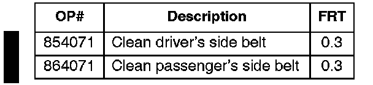
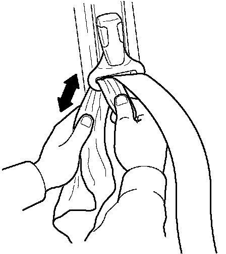

Interior - Seat Belt(s) Slow to Retract
91-050September 15, 2003
Applies To:
ALL
Seat Belt Slow to Retract
(Supersedes 91-050, dated August 31, 1993)
Updated information is shown with black bars.
SYMPTOM
The seat belt will not retract all the way, or retracts slowly.
PROBABLE CAUSE
Dirt on the seat belt webbing and guide.
CORRECTIVE ACTION
Clean the seat belts and guides with a mild soap and water solution, or isopropyl alcohol. This applies only to three-point active seat belt systems, not to motorized systems.

WARRANTY CLAIM INFORMATION
This repair is covered by the Lifetime Seat Belt Limited Warranty.
Failed Part: P/N 818A3-SK7-A23ZA
Defect Code: L11
Contention Code: B99
Skill Level: Repair Technician
REPAIR PROCEDURE
1. Use either isopropyl alcohol, or prepare a solution of 5 ounces of mild dishwashing liquid in a gallon of warm water.
NOTICE
Do not use strong cleaning solutions, upholstery cleaners, or commercial automotive interior cleaners. They can affect the durability of the webbing.

2. Soak a clean cloth in the cleaner. Insert the cloth between the seat belt and metal loop on the upper anchor. Use a credit card or similar item to help insert the cloth into the loop. Work the cloth back and forth to clean the dirt out of the inside of the loop.
3. Pull the seat belt out fully. Soak a clean cloth in the cleaner, and clean both sides of the seat belt webbing. Dry the webbing thoroughly with a clean cloth. Do not use a hair dryer or similar device.
4. Test the belt for proper retraction by pulling the latch plate down to the floor of the vehicle and then releasing it. The belt should retract fully in 4 seconds or less.

Disclaimer